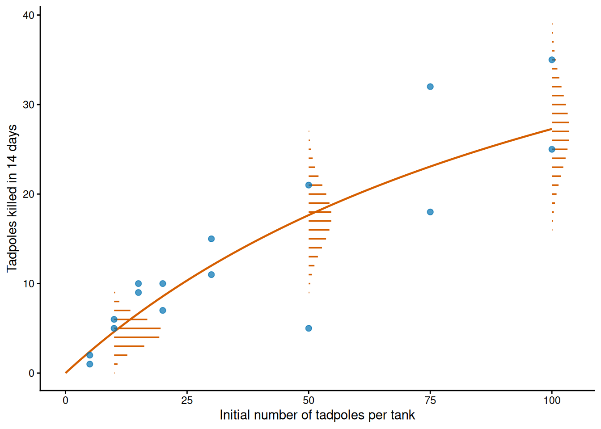
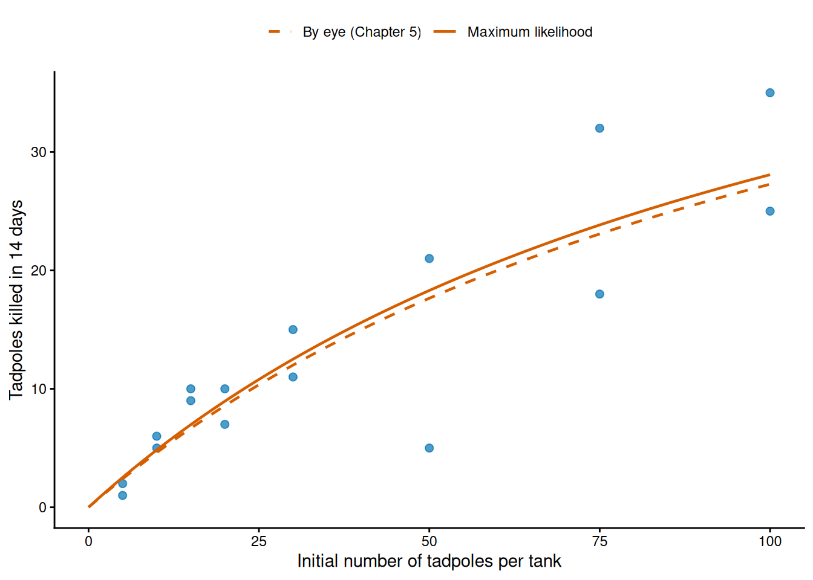
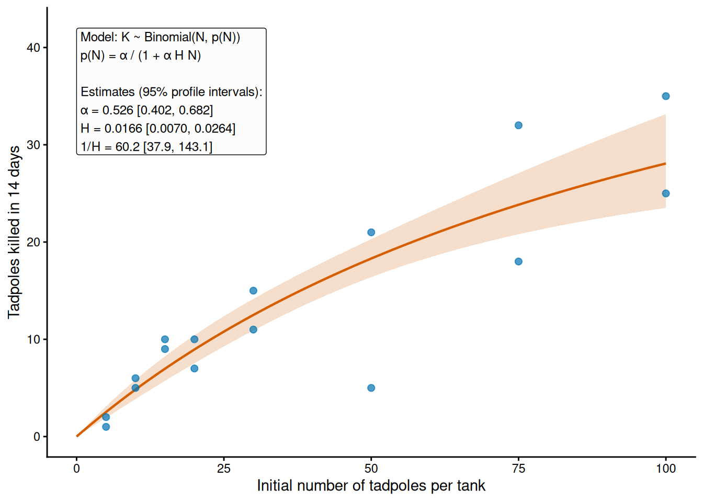
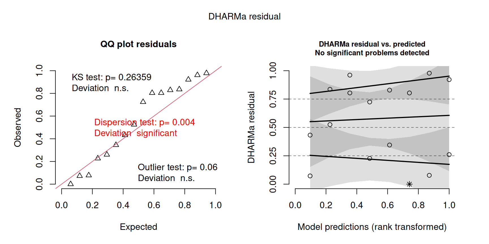

Fitting ecological response curves
1 Introduction
In this chapter, we learn how to fit an ecological response curve to data: a deterministic function of a predictor describes one parameter of the distribution of each observation (usually its mean), and the parameters of the function are estimated by maximum likelihood. Once the curve is fitted, we estimate the uncertainty of its parameters and of the curve itself, check whether the fitted model describes the data, revise the model where it does not, and compare it with alternative models.
The chapter brings together the two pillars of the book, probability distributions and likelihood (Chapter 2 to Chapter 4) and deterministic functions (Chapter 5). What is new is the likelihood of a response curve, in which every observation has a distribution of its own; how RTMB calculates the gradient of the negative log-likelihood that the optimiser uses; the uncertainty of a fitted curve; residuals calculated by simulation from the fitted model; and two further tools for comparing models, the Bayesian information criterion and cross-validation. One example runs through the chapter, the functional response of dragonfly larvae that prey on reed frog tadpoles (Vonesh and Bolker 2005).1 These are the data that Chapter 5 used as a backdrop and for which it read starting values by eye. The observations are numbers of tadpoles killed out of a known number, so the distributions of the chapter are the Binomial and the Beta-Binomial, and the residuals are calculated with the package DHARMa. Every tank is treated as an independent observation; Chapter 7 extends the models to observations that come in groups.
2 Learning goals
In this chapter, we will cover:
- a response curve as a parameter of a distribution;
- the likelihood of a response curve and its fit;
- how RTMB calculates the gradient of the negative log-likelihood;
- standard errors, correlation and likelihood profile intervals of the parameters of a curve;
- the uncertainty of the fitted curve;
- simulation from a fitted model and scaled quantile residuals;
- a model for overdispersed proportions;
- model comparison with AIC, AICc, BIC and leave-one-out cross-validation.
We will use the Binomial and Beta-Binomial entries of the distribution supplement and the Michaelis–Menten entry of the function supplement.
The table below is a roadmap of the chapter. Each row is one step, with the question that it answers and the R tools that we use for it.
| Step | Question it answers | In R |
|---|---|---|
| The model | Which parameter of which distribution does the curve describe? | plogis(), exp() |
| The fit | Which parameter values make the observed counts most probable? | NLL with the predictor in the list of data, MakeADFun(), optim() |
| The gradient | How does the optimiser know in which direction to move? | obj$gr() |
| Uncertainty of the parameters | How precisely are the parameters of the curve estimated? | sdreport(), cov2cor(), TMB::tmbprofile(), confint() |
| Uncertainty of the curve | How precisely is the curve itself estimated? | ADREPORT() on a grid of the predictor |
| Checking the model | Does the fitted model describe the data? | OBS(), obj$simulate(), DHARMa::createDHARMa() |
| Revising the observation model | What if the counts vary more than the model allows? | dbetabinom() |
| Comparison | Which of the candidate models do the data support? | AIC, AICc and BIC from fit$value; a for loop that leaves out one tank at a time |
3 From a response curve to a model for observations
A response curve gives one parameter of the distribution of each observation as a function of a predictor. Let \(Y_i\) be the \(i\)-th observation and \(x_i\) the value of the predictor at which it was made. The parameter \(\theta_i\) of its distribution is
\[ \theta_i=f(x_i;\boldsymbol\beta), \]
where \(f\) is a deterministic function of the kind studied in Chapter 5 and \(\boldsymbol\beta\) is the vector of its parameters (the semicolon separates the input of the function from its parameters). Usually \(\theta_i\) is the mean, because the curves of Chapter 5 describe how an expected response changes with a predictor. The other parameters of the distribution, such as the standard deviation of a Normal model or the shape of a Negative Binomial model, are often shared by all the observations. So every observation has a distribution of the same family, but with its own value of the parameter that follows the curve.
The curve must return a value in the range of the parameter that it describes. A mean count cannot be negative and a probability must lie between 0 and 1, whereas the functions of Chapter 5 are not restricted in this way for every value of their parameters and of \(x\). The table gives the usual cases. Chapter 5 showed how to give a curve the range that a quantity requires, by passing it through an outer function.
| Distribution | Parameter that follows the curve | Range | How to give the curve that range |
|---|---|---|---|
| Normal | mean \(\mu\) | any real value | any curve |
| Poisson, Negative Binomial | mean \(\mu\) | positive | a curve that is positive for every \(x\), or the exponential of another curve |
| Binomial | probability \(p\) | between 0 and 1 | a curve between 0 and 1 for every \(x\), or the inverse logit of another curve |
As in Chapter 4, we treat the observations as independent. They are no longer identically distributed, however: two observations made at different values of the predictor have different distributions, and the distribution of each observation depends on the known value of its predictor. This is the change from Chapter 4, where every observation had the same distribution. Note also that the observation model is a choice, in the same way as the curve is (see “Choosing a distribution” in Chapter 2), and in this chapter we will revise it.
Let’s write the model for the reed frog experiment. Sixteen tanks were stocked with \(N_i\) tadpoles, from 5 to 100, together with three dragonfly larvae, and \(K_i\) is the number of tadpoles killed in tank \(i\) in 14 days. Each tadpole of a tank is either killed or not, so we use a Binomial model with \(N_i\) trials, in which the curve gives the probability that a tadpole is killed:
\[ K_i \sim \operatorname{Binomial}\left(N_i,\,p(N_i)\right), \qquad p(N)=\frac{\alpha}{1+\alpha HN}, \qquad i=1,\ldots,16, \]
where \(\alpha\) is the attack rate and \(H\) the handling time of the Holling type II form of the disc equation (Chapter 5). Here the predictor, the initial number of tadpoles, is also the number of trials. The curve describes the probability and not the number killed, because a Binomial distribution is written in terms of the number of trials and a probability. The expected number killed is then
\[ E[K_i]=N_i\,p(N_i)=\frac{\alpha N_i}{1+\alpha HN_i}, \]
the disc equation of Chapter 5. Under the assumptions of the disc equation, the probability of being killed decreases with density because the larvae spend more of their time handling the prey that they have caught. The units follow from Chapter 5: the tadpoles killed were counted over the whole experiment, so \(\alpha\) is a fraction per experiment (at low density, a tadpole is killed with probability close to \(\alpha\)) and \(H\) is in experiments per tadpole killed. With \(0<\alpha<1\) and \(H>0\), the probability \(p(N)\) lies between 0 and \(\alpha\) for every density, so this curve has the range that the Binomial distribution requires without an outer function; when we fit it, we keep \(\alpha\) between 0 and 1 and \(H\) positive with the transformations of Chapter 4. We treat the 16 tanks as independent. The Binomial model also assumes that, within a tank, every tadpole has the same probability of being killed, independently of the others, which we check in Section 6.
Figure 1 shows what the model says about the data, with the parameter values that Chapter 5 read by eye (\(\alpha=0.5\) per experiment and \(H=1/60\) experiments per tadpole killed). The curve gives the expected number killed at every density, and around it, at each density, the Binomial distribution gives the probability of every possible number killed. The spread of that distribution increases with the number of tadpoles in the tank.
Practice 1: seedlings and light
The number of tree seedlings in a quadrat is described with a Poisson distribution whose parameter follows a curve of the light that reaches the soil, \(x\) (% of full sunlight). Which parameter of the distribution does the curve describe, and which values must it return? Could the straight line \(a+bx\) be used for every value of \(a\) and \(b\)? Could the Michaelis–Menten function \(ax/(b+x)\) with positive \(a\) and \(b\), if some quadrats have no light at all?
TipSolution
The curve describes the mean \(\lambda\) of the Poisson distribution, the expected number of seedlings per quadrat, which must be positive. The straight line becomes negative for some values of \(x\) unless \(a\) and \(b\) are restricted, so it cannot be used for every value of its parameters; its exponential, \(e^{a+bx}\), is positive for any \(a\), \(b\) and \(x\). The Michaelis–Menten function is positive for \(x>0\), but it is zero at \(x=0\). A Poisson distribution with a mean of zero gives probability one to a count of zero, so a quadrat without light that contains a seedling would have a probability of zero under the model, and the log-likelihood could not be calculated.
4 Fitting a response curve by maximum likelihood
The likelihood of a response curve is calculated as in Chapter 4: the observations are independent, so the log-likelihood is the sum of the log probabilities (or densities) of the observations. The difference is that each probability is calculated with the parameter of its own distribution, which the curve gives at the predictor value of that observation:
\[ \ell(\boldsymbol\beta)=\sum_{i=1}^{n}\log\left(P(Y_i=y_i\mid\boldsymbol\beta)\right), \]
where \(y_i\) is the observed value of \(Y_i\) and \(P(Y_i=y_i\mid\boldsymbol\beta)\) is the probability that the model assigns to it when the parameter of its distribution is \(f(x_i;\boldsymbol\beta)\) (any shared parameter of the distribution is added to \(\boldsymbol\beta\)). Everything else is the same as in Chapter 4: we write the negative log-likelihood (NLL) with two lists, transform the constrained parameters, connect the NLL to the data with cmb(), process it with MakeADFun(), minimise it with optim() and check the convergence. Two things are new. The list of data holds the predictor as well as the response, and the starting values of the parameters of the curve are read from a plot of the data, as in “Starting values by eye” in Chapter 5.
For the reed frog tanks the log-likelihood is
\[ \ell(\alpha,H)=\sum_{i=1}^{16}\log\left(\binom{N_i}{K_i}\,p(N_i)^{K_i} \left(1-p(N_i)\right)^{N_i-K_i}\right), \qquad p(N_i)=\frac{\alpha}{1+\alpha HN_i}. \]
We load RTMB and RTMBdist and the data of the experiment, and put the two variables that the NLL uses in the list of data: initial, the number of tadpoles at the start of the experiment in each tank (the predictor and the number of trials), and killed, the number killed (the response):
# Load RTMB first and RTMBdist second.
library(RTMB)
library(RTMBdist)
# Reed frog functional response (see ?emdbook::ReedfrogFuncresp): the initial number of
# tadpoles (Initial) and the number killed in 14 days (Killed) in each of 16 tanks.
data(ReedfrogFuncresp, package = "emdbook")
frog_data = list(initial = ReedfrogFuncresp$Initial, killed = ReedfrogFuncresp$Killed)The NLL transforms the parameters, calculates the curve and adds up the log probabilities. The attack rate is a probability, so the optimiser works with its logit, logit_alpha, which plogis() turns back into \(\alpha\); the handling time is positive, so the optimiser works with its logarithm, log_H. Because initial is a vector, the line of the curve returns a vector with one probability for each tank, and dbinom() uses the number of trials and the probability of each tank:
# Negative log-likelihood of the Binomial model with the Holling type II curve.
binomial_nll = function(parms, data) {
# Make the elements of both lists available by name.
getAll(parms, data)
# Transform the parameters to the original scale.
alpha = plogis(logit_alpha)
H = exp(log_H)
# Probability that a tadpole is killed, at the density of each tank.
p = alpha / (1 + alpha * H * initial)
-sum(dbinom(x = killed, size = initial, prob = p, log = TRUE))
}Chapter 5 read \(a=60\) tadpoles killed and \(b=120\) tadpoles per tank from a plot of these data, which correspond to \(\alpha=0.5\) per experiment and \(H=1/60\) experiments per tadpole killed. We give them to MakeADFun() on the transformed scales and fit the model:
# Connect a likelihood to a data set.
cmb = function(f, d) function(p) f(p, d)
# Process the NLL, starting from the values read by eye in Chapter 5.
binomial_obj = MakeADFun(
cmb(binomial_nll, frog_data),
list(logit_alpha = qlogis(0.5), log_H = log(1 / 60)),
silent = TRUE
)
# Minimise the NLL with BFGS and check the convergence code.
binomial_fit = optim(
par = binomial_obj$par,
fn = binomial_obj$fn,
gr = binomial_obj$gr,
method = "BFGS"
)
binomial_fit$convergence[1] 0The estimates are transformed back to the original scale. By invariance (Chapter 4), the estimates of other quantities of the curve follow from them. Two are useful here: the largest number of tadpoles that the larvae could kill in one experiment, \(1/H\), which is the asymptote of the expected number killed, and the density at which the expected number killed reaches half of that asymptote, \(1/(\alpha H)\) (the parameters \(a\) and \(b\) of the Michaelis–Menten form):
# Estimates on the original scale.
alpha_mle = unname(plogis(binomial_fit$par["logit_alpha"]))
H_mle = unname(exp(binomial_fit$par["log_H"]))
# Asymptote and half-maximum of the expected number killed, by invariance.
c(
alpha_mle = alpha_mle,
H_mle = H_mle,
max_killed = 1 / H_mle,
half_maximum = 1 / (alpha_mle * H_mle)
) alpha_mle H_mle max_killed half_maximum
0.52585383 0.01659881 60.24527755 114.56658596 The estimates are \(\hat\alpha\approx0.526\) per experiment and \(\hat H\approx0.0166\) experiments per tadpole killed. The larvae could kill at most about 60 tadpoles in one experiment, and the expected number killed reaches half of this at about 115 tadpoles per tank. These values are close to the 60 and 120 that Chapter 5 read by eye (Figure 2), which is not surprising: the initial slope of the curve can be read from the tanks at low density, and the asymptote that Chapter 5 chose happened to be close to the estimate. Chapter 5 also found that these data say little about the asymptote, and Section 5 shows what this means for the uncertainty of the estimates.

A convergence code of zero is the first check of a fit. The next is whether the fitted model describes the data, which we check with residuals in Section 6. When the code is not zero, the note “When a fit fails” in Chapter 4 says what to try.
4.1 The gradient and automatic differentiation
Since Chapter 4 we have given every NLL to MakeADFun() before fitting it. There we said that this step processes the NLL so that the tools of the course can work with it, and that RTMB supplies the slope that BFGS uses. We can now say what that slope is. The gradient of the NLL is the vector of its partial derivatives with respect to the parameters (Chapter 5), that is, its slope in the direction of each parameter. RTMB calculates it by automatic differentiation: from the code of the NLL, exactly up to rounding error, and without a formula from us. The element gr of the object returns the gradient at the parameter values that we give it, on the scale that is optimised, with one column per parameter in the order of the list of parameters:
# The gradient of the NLL at the starting values and at the estimates.
binomial_obj$gr(binomial_obj$par) [,1] [,2]
[1,] -4.299806 3.199816binomial_obj$gr(binomial_fit$par) [,1] [,2]
[1,] 0.002183858 -0.004839986At the starting values the gradient is not zero, and its signs tell BFGS in which direction to move each parameter to lower the NLL. At the estimates both elements are close to zero, as they should be at a minimum.
An exact gradient matters for response curves for three reasons. First, BFGS uses the gradient at every step to decide in which direction to move. Without gr, optim() approximates it by evaluating the NLL at nearby values of every parameter (Chapter 8 explains how), which costs time and accuracy. Second, the parameters of a curve are often correlated, as we will see in Section 5, so that the NLL forms a narrow and tilted valley like the one of the owl model in Chapter 4. In such a valley the direction of the next step depends on small differences between the partial derivatives, and an inexact gradient can stop the search before it reaches the minimum. Third, the same derivatives are behind the other tools of the course: sdreport() calculates the curvature of the NLL from them, ADREPORT() uses them for the standard errors of quantities calculated from the parameters (Section 5.3), and in Chapter 7 they are needed to integrate random effects out of the likelihood.
For RTMB to calculate these derivatives, the NLL must be written with operations and functions that RTMB knows. This is the reason why the probability mass and density functions of the course come from RTMB and RTMBdist.
WarningWhen automatic differentiation needs care
RTMB works out the derivatives from the calculations that the NLL carried out when MakeADFun() ran it at the starting values, so every calculation that involves a parameter must have a derivative. A branch that depends on a parameter (an if that compares a parameter with a value) does not: if it were recorded, only the side taken at the starting values would be used afterwards. RTMB therefore refuses such a comparison, and MakeADFun() stops with the error “Comparison is generally unsafe for AD types”. In the same way, a curve with a sharp change at an unknown threshold has no derivative at the change. Such calculations need special care, and a smooth curve that approximates the sharp change is the usual solution. Check the NLL on sensible parameter values in R first (a function written with getAll() can be called directly with two lists), and inspect binomial_obj$fn(binomial_obj$par) and binomial_obj$gr(binomial_obj$par) before fitting.
5 Uncertainty of a response curve
The uncertainty of the estimates is calculated from the likelihood, as in Chapter 4. Two questions are new with a response curve. The first is how the precision of each parameter depends on where the observations lie along the predictor. The second is how uncertain the curve itself is, since a point of the curve is a quantity calculated from all of its parameters.
5.1 Standard errors and correlation of the parameters
sdreport() calculates the standard errors and the covariance matrix of the estimates from the curvature of the NLL, as in Chapter 4. Two features are typical of the parameters of a curve. Their estimates are often strongly correlated, because different combinations of the parameters give similar curves over the range of the data. And how precisely each parameter is estimated depends on where along \(x\) the observations lie. Chapter 5 showed with partial derivatives that a curve responds to each parameter in a different part of its range; the observations that inform a parameter are those made where the curve responds to it. So data that cover only the rise of a saturating curve determine its initial slope better than its asymptote. The correlation also depends on the parameterisation, whereas the fit does not (see “Parameterisation, slices and profiles” in Chapter 4).
For the tanks, summary() gives the estimates and standard errors on the optimised scales, and cov2cor() turns the covariance matrix in the element cov.fixed into correlations:
# Standard errors on the optimised scales, and the correlation between the estimates.
binomial_sd = sdreport(binomial_obj)
summary(binomial_sd) Estimate Std. Error
logit_alpha 0.1035076 0.2850642
log_H -4.0984242 0.2941594cov2cor(binomial_sd$cov.fixed) logit_alpha log_H
logit_alpha 1.0000000 0.8239933
log_H 0.8239933 1.0000000The correlation between the estimates of \(\operatorname{logit}(\alpha)\) and \(\log(H)\) is 0.82. It is positive because a steeper initial rise of the curve (a larger \(\alpha\)) must be compensated by a stronger levelling off (a larger \(H\)) for the curve to pass through the tanks at high density, so hypothetical samples that overestimate one parameter tend to overestimate the other. In the Michaelis–Menten form, with \(\log(a)\) and \(\log(b)\), the same model has the same maximum and a correlation of 0.98: the estimates of the asymptote and of the half-maximum are almost interchangeable, because the data determine mainly their ratio, the initial slope \(a/b=\alpha\). This is what Chapter 5 found when it read starting values from these data (“Starting values by eye”). The densities of the experiment stop at 100 tadpoles per tank, below the estimated half-maximum of 115, so the tanks cover less than half of the rise of the curve. They determine \(\alpha\), which describes the start of the curve, much better than \(H\), which describes its end, as the intervals of the next section show.
5.2 Likelihood profile intervals of the parameters
Likelihood profile intervals are calculated with TMB::tmbprofile() and confint(), as in Chapter 4, and they remain the reference method. With a response curve, the profile of a poorly determined parameter is often asymmetric, because the data rule out values on one side of the estimate much more strongly than on the other. The endpoints of the interval can be transformed with any monotonic function to give an interval for a quantity calculated from the parameter: an increasing function keeps their order and a decreasing function swaps them. We profile both parameters, transform the endpoints back, and calculate the interval of the largest number of tadpoles killed, \(1/H\), from that of \(H\):
# Profiles of logit(alpha) and log(H). Each profile contains the estimate twice, so
# confint() warns that it collapses repeated values; the warning can be ignored.
binomial_profile_alpha = TMB::tmbprofile(binomial_obj, name = "logit_alpha", trace = FALSE)
binomial_profile_H = TMB::tmbprofile(binomial_obj, name = "log_H", trace = FALSE)
# 95% intervals transformed back to the original scale.
alpha_interval = plogis(confint(binomial_profile_alpha))
H_interval = exp(confint(binomial_profile_H))
# 1 / H decreases with H, so the endpoints swap.
profile_intervals = rbind(alpha_interval, H_interval, rev(1 / H_interval))
dimnames(profile_intervals) = list(c("alpha", "H", "1/H"), c("lower", "upper"))
profile_intervals lower upper
alpha 0.402430935 0.68246512
H 0.006988006 0.02638401
1/H 37.901737130 143.10233922The interval for the attack rate, 0.40 to 0.68 per experiment, is narrow compared with the interval for the handling time, which spans almost a factor of four. Accordingly, the interval for the largest number of tadpoles that the larvae could kill in one experiment runs from 38 to 143 around an estimate of 60: it extends 22 tadpoles below the estimate and 83 above it, and its upper end lies beyond the largest density of the experiment. The data rule out a low asymptote, because the larvae killed up to 35 tadpoles, but not a high one. The profile is asymmetric even on the log scale, so the Wald interval from the log scale (34 to 107 tadpoles) misses most of the upper part of the profile interval.
5.3 Uncertainty of the fitted curve
A point of the curve, such as the expected number killed at a given density, is a quantity calculated from the parameters. Its standard error is requested with ADREPORT(), as in Chapter 4, where TMB applies the delta method (the box below gives the formula for several parameters). ADREPORT() of a vector reports every element with its own standard error, so if we pass a grid of predictor values in the list of data and calculate the curve on that grid inside the NLL, sdreport() returns the curve and its standard error at every point of the grid. From them we calculate a Wald interval at each point, on a scale on which the quantity is unbounded, and transform the endpoints back, for the same reasons as for the parameters in Chapter 4. For a probability that scale is the logit. Together the intervals form a confidence band.
The band is pointwise: at each value of \(x\), the interval contains the value of the curve under the data generating process at that \(x\) in approximately 95% of hypothetical samples. This is not the same as a band that contains the whole curve in 95% of hypothetical samples, which would be wider. The band also says nothing about where the observations of new tanks would fall: that is described by the distribution of the observations around the curve (Figure 1), which is much wider.
For the reed frogs we add a grid of densities from 0 to 100 tadpoles per tank to the list of data, as initial_grid:
# A grid of densities (tadpoles per tank), added to the list of data.
initial_grid = seq(from = 0, to = 100, by = 1)
frog_data$initial_grid = initial_gridThe NLL gains three lines, which calculate the probability that a tadpole is killed at every density of the grid, its logit with qlogis(), and ask for the standard error of every element with ADREPORT(). We process the new NLL, fit it again (the estimates do not change) and call sdreport():
# The Binomial NLL with three more lines.
binomial_nll = function(parms, data) {
getAll(parms, data)
alpha = plogis(logit_alpha)
H = exp(log_H)
p = alpha / (1 + alpha * H * initial)
# The logit of the probability of being killed at every density of the grid.
p_grid = alpha / (1 + alpha * H * initial_grid)
logit_p_grid = qlogis(p_grid)
ADREPORT(logit_p_grid)
-sum(dbinom(x = killed, size = initial, prob = p, log = TRUE))
}
# Process the new NLL, fit it again and calculate the standard errors.
binomial_obj = MakeADFun(
cmb(binomial_nll, frog_data),
list(logit_alpha = qlogis(0.5), log_H = log(1 / 60)),
silent = TRUE
)
binomial_fit = optim(
par = binomial_obj$par,
fn = binomial_obj$fn,
gr = binomial_obj$gr,
method = "BFGS"
)
binomial_sd = sdreport(binomial_obj)With the argument select = "report", summary() returns only the rows of the quantities requested with ADREPORT(), here one row per density of the grid. We calculate the Wald interval of each row on the logit scale, transform the endpoints back with plogis() and multiply them by the density to obtain the band for the expected number killed:
# Rows of logit_p_grid: one per density of the grid.
band_summary = summary(binomial_sd, select = "report")
# Wald intervals on the logit scale.
critical_value = qnorm(p = 0.975)
logit_lower = band_summary[, "Estimate"] - critical_value * band_summary[, "Std. Error"]
logit_upper = band_summary[, "Estimate"] + critical_value * band_summary[, "Std. Error"]
# The curve and its band for the expected number killed.
curve_band = data.frame(
initial = initial_grid,
killed = initial_grid * plogis(band_summary[, "Estimate"]),
lower = initial_grid * plogis(logit_lower),
upper = initial_grid * plogis(logit_upper)
)Figure 3 shows the band with the data, the formula of the model and the estimates. On the logit scale the band is narrowest near 50 tadpoles per tank and wider towards both ends. The tanks at low density hold few tadpoles each, so most of the information about the curve comes from the denser tanks, and the band widens away from the middle of that information. For the expected number killed the band also widens with density because the probability is multiplied by the number of tadpoles; at the highest density it runs from about 24 to 33 tadpoles killed. So within the range of the data the curve is well determined, although its asymptote is not. Beyond 100 tadpoles per tank the band would widen quickly, because there the curve depends more and more on the asymptote.

Whether these intervals have a coverage close to 95% with 16 tanks can be checked by simulation, in the same way as in “Coverage checked by simulation” in Chapter 4; the extra exercise of the practical does this for a quantity of a fitted curve.
Practice 2: handling time of a ladybird
A Holling type II curve is fitted to the number of aphids eaten by ladybird larvae in one hour, with the handling time \(H\) (hours per aphid) optimised on the log scale. The fit gives \(\log(\hat H)=-3.2\), and sdreport() gives a standard error of 0.20 for it. Calculate a 95% Wald interval for \(H\), and from it an interval for the largest number of aphids that a larva can eat per hour, \(1/H\). Why are the endpoints swapped in the second interval?
TipSolution
We calculate the interval on the log scale, transform its endpoints with exp(), and then take the inverse of both endpoints:
# Wald interval for H (hours per aphid), from the log scale.
H_wald = exp(-3.2 + c(-1, 1) * qnorm(p = 0.975) * 0.20)
H_wald[1] 0.02754339 0.06032509# Interval for 1 / H (aphids/hour): the inverse of the two endpoints, in reverse order.
rev(1 / H_wald)[1] 16.57685 36.30636The interval for \(H\) goes from approximately 0.028 to 0.060 hours per aphid, and the interval for the largest feeding rate from approximately 17 to 36 aphids/hour, around an estimate of \(1/e^{-3.2}\approx24.5\). The function \(1/H\) decreases as \(H\) increases, so the lower endpoint of \(H\) gives the upper endpoint of \(1/H\), and the other way round. Because the function is monotonic, the second interval contains \(1/H\) in exactly the hypothetical samples in which the first contains \(H\), so it has the same coverage.
6 Checking the fitted model
A fitted model describes the whole distribution of every observation, and not only its expected value. Checking the model means comparing that description with the data. In Chapter 3 the observations had a common distribution, so we could compare their empirical distribution with the model distribution. With a response curve each observation has a distribution of its own, and only one observation comes from each of them. We therefore simulate many values from the distribution of each observation and see where the observed value falls among them.
6.1 Simulating from the fitted model
With its parameters at the estimates, a fitted model is a data generating process from which we can simulate. As in “Coverage checked by simulation” in Chapter 4, we mark the response with OBS() inside the NLL, and the function simulate() of the processed object then draws one hypothetical sample for the parameter values that we give it. A hypothetical sample has the same design as the data: the same observations, with the same values of the predictor. Each simulated value is drawn from the distribution of its observation, so the simulation contains the variation of the observations around the curve, which is what the check needs.
For the reed frogs, the NLL gains one line, killed = OBS(killed). We process it and fit it again (the estimates do not change):
# The Binomial NLL with one more line.
binomial_nll = function(parms, data) {
getAll(parms, data)
# Mark the response as observations, so that they can be simulated.
killed = OBS(killed)
alpha = plogis(logit_alpha)
H = exp(log_H)
p = alpha / (1 + alpha * H * initial)
p_grid = alpha / (1 + alpha * H * initial_grid)
logit_p_grid = qlogis(p_grid)
ADREPORT(logit_p_grid)
-sum(dbinom(x = killed, size = initial, prob = p, log = TRUE))
}
# Process the new NLL and fit it again.
binomial_obj = MakeADFun(
cmb(binomial_nll, frog_data),
list(logit_alpha = qlogis(0.5), log_H = log(1 / 60)),
silent = TRUE
)
binomial_fit = optim(
par = binomial_obj$par,
fn = binomial_obj$fn,
gr = binomial_obj$gr,
method = "BFGS"
)
binomial_fit$convergence[1] 0Each call to simulate() returns the numbers killed in 16 simulated tanks with the initial numbers of the experiment. We store 1,000 hypothetical samples in a matrix with one row per tank and one column per hypothetical sample:
# 1,000 hypothetical samples of the 16 tanks at the estimates: one row per tank and one
# column per hypothetical sample.
n_sim = 1000
binomial_simulations = matrix(NA, nrow = length(frog_data$killed), ncol = n_sim)
set.seed(seed = 601)
for (j in seq_len(n_sim)) {
binomial_simulations[, j] = binomial_obj$simulate(binomial_fit$par)$killed
}
# The first five hypothetical samples of the first four tanks (5, 5, 10 and 10 tadpoles).
binomial_simulations[1:4, 1:5] [,1] [,2] [,3] [,4] [,5]
[1,] 2 3 3 2 3
[2,] 2 4 2 3 3
[3,] 8 6 6 6 3
[4,] 5 3 5 7 66.2 Scaled quantile residuals
The scaled quantile residual of an observation is the fraction of its simulated values that are smaller than the observed value. An observation in the middle of its simulated values has a residual close to 0.5, one below all of them a residual of 0 and one above all of them a residual of 1. For a discrete response, the observed value is often equal to some of the simulated values, and the residual is then drawn at random between the fraction of simulated values that are smaller and the fraction that are smaller or equal. If the model describes the data generating process, each observation behaves like one more draw from its own distribution, so it is equally likely to fall anywhere among its simulated values. The residuals are then approximately uniform between 0 and 1, whatever the distribution of the observations and whatever the values of the predictor. This is what makes them useful for response curves: they put observations with different distributions on one common scale.2
Three kinds of pattern show that the model disagrees with the data:
- a distribution of the residuals that is not uniform: too many residuals near 0 and 1 mean that the observations vary more around the curve than the model allows, and too many near 0.5 that they vary less;
- a trend of the residuals against the predictor or against the fitted values, which means that the curve misses a systematic change of the response;
- residuals of exactly 0 or 1, from observations outside the range of all their simulated values, which DHARMa marks as outliers.
The function DHARMa::createDHARMa() calculates the residuals from simulations that we supply. Its arguments are:
simulatedResponse, the matrix of simulated values, with one row per observation;observedResponse, the observed values;fittedPredictedResponse, the expected value of each observation under the fitted model, which DHARMa uses in its plots and in the dispersion statistic below;integerResponse = TRUEfor a discrete response, so that ties are drawn at random as described above.
plot() of the result draws two panels: on the left a quantile–quantile plot of the residuals against a uniform distribution, and on the right the residuals against the fitted values, on the scale of their ranks, with the quartiles 0.25, 0.5 and 0.75 as dashed lines. DHARMa::plotResiduals() with the argument form draws the residuals against any predictor. For the reed frogs the expected number killed increases with the initial number of tadpoles, so the right panel already shows the residuals in the order of the densities. We calculate the expected number killed in each tank and the residuals:
# Expected number killed in each tank under the fitted model.
binomial_expected = frog_data$initial * alpha_mle /
(1 + alpha_mle * H_mle * frog_data$initial)
# Scaled quantile residuals from the simulations, and the two standard panels.
binomial_residuals = DHARMa::createDHARMa(
simulatedResponse = binomial_simulations,
observedResponse = frog_data$killed,
fittedPredictedResponse = binomial_expected,
integerResponse = TRUE
)
plot(binomial_residuals)
The residuals do not follow a uniform distribution: in the quantile–quantile plot the upper half of the residuals lies above the line, so more tanks than expected have residuals close to 1, and one tank, with 50 tadpoles of which 5 were killed, lies below all its simulated values (the star). In the right panel the lines fitted to the quartiles of the residuals lie on or outside the dashed lines, the upper one well above 0.75: the tanks spread further from the middle of their simulated values than the model allows. There is no clear trend against density, so the curve itself does not miss a systematic change.
DHARMa summarises the spread with a dispersion statistic: the variance of the observed values around their expected values, divided by the average of the same variance in the simulated samples. It is close to one when the model allows the right amount of variation. The function DHARMa::testDispersion() calculates it; we keep only its element statistic:
# Observed spread around the curve relative to the simulated spread.
DHARMa::testDispersion(binomial_residuals, plot = FALSE)$statisticdispersion
2.925697 The numbers killed vary around the curve almost three times as much (as a variance) as the Binomial model allows. This is overdispersion relative to the Binomial distribution, which Chapter 2 introduced for counts relative to the Poisson distribution (“Overdispersion”). The two tanks with 50 tadpoles, with 5 and 21 killed, show it in the data: under the Binomial model they share the same distribution, in which 5 killed is very unlikely. The model assumes that every tadpole of a tank has the same probability of being killed, independently of the other tadpoles, and these tanks differ more than that assumption allows.
DHARMa also prints tests with p-values, on its plots and in functions such as testDispersion(). We read the plots and the dispersion statistic as exploratory evidence and do not rest decisions on the p-values, for the reasons given in Chapter 1 and at the end of Chapter 4: with 16 tanks a large p-value mainly says that there are few data, and a small one does not say how much the disagreement matters.
WarningWhat a residual check can and cannot show
A residual check shows where a fitted model disagrees with the data. It does not say which assumption is wrong: overdispersion can come from the distribution, from a predictor that is missing from the curve, or from observations that are not independent. Nor does a plot without a pattern show that the model is right or that the observations are independent; with few observations only large disagreements are visible.
7 A model for overdispersed proportions
When the probability of an outcome varies among sampling units beyond what the predictor explains, the counts vary more than a Binomial model allows. The Beta-Binomial distribution describes this situation: the probability of each sampling unit is drawn from a Beta distribution, and the count of that unit follows a Binomial distribution with this probability. With a response curve we parameterise it with the mean probability \(p\), which the curve gives, and the precision \(\kappa\) (\(\kappa=a+b\) in the supplement, where \(a\) and \(b\) are the shape parameters of the Beta distribution, and so \(a=\kappa p\) and \(b=\kappa(1-p)\)). For a unit with \(N\) trials the mean and the variance of the count are
\[ E[K]=Np, \qquad \operatorname{Var}(K)=Np(1-p)\,\frac{\kappa+N}{\kappa+1}, \]
where \(Np(1-p)\) is the variance of a Binomial distribution with the same mean. The factor \((\kappa+N)/(\kappa+1)\) is larger than one whenever \(N>1\) and approaches one as \(\kappa\) grows, so a small \(\kappa\) means much variation among units and a large \(\kappa\) gives almost a Binomial distribution. Note that the factor grows with \(N\): the variation of the probability among units matters more when each unit has more trials. The precision is positive, so we optimise \(\log(\kappa)\).
The curve does not change: only the observation model is revised, so that the probability that a tadpole is killed varies among tanks around \(p(N)\). This is the step of the modelling cycle of Chapter 1 in which a check sends us back to the model. For the tanks,
\[ K_i \sim \operatorname{Beta-Binomial}\left(N_i,\,\kappa\,p(N_i),\,\kappa\left(1-p(N_i)\right)\right), \qquad p(N)=\frac{\alpha}{1+\alpha HN}. \]
The NLL uses dbetabinom() of RTMBdist, whose arguments shape1 and shape2 are the two shape parameters. We include OBS() from the start, because we will check this model too:
# Negative log-likelihood of the Beta-Binomial model with the Holling type II curve.
betabinomial_nll = function(parms, data) {
getAll(parms, data)
killed = OBS(killed)
alpha = plogis(logit_alpha)
H = exp(log_H)
kappa = exp(log_kappa)
# Mean probability that a tadpole is killed, at the density of each tank.
p = alpha / (1 + alpha * H * initial)
-sum(dbetabinom(
x = killed, size = initial, shape1 = kappa * p, shape2 = kappa * (1 - p), log = TRUE
))
}We start from the estimates of the Binomial model and a precision of 10, fit the model and calculate the standard errors:
# Process the NLL, starting from the Binomial estimates and kappa = 10, and fit it.
betabinomial_obj = MakeADFun(
cmb(betabinomial_nll, frog_data),
list(
logit_alpha = binomial_fit$par[["logit_alpha"]],
log_H = binomial_fit$par[["log_H"]],
log_kappa = log(10)
),
silent = TRUE
)
betabinomial_fit = optim(
par = betabinomial_obj$par,
fn = betabinomial_obj$fn,
gr = betabinomial_obj$gr,
method = "BFGS"
)
betabinomial_fit$convergence[1] 0# Standard errors on the optimised scales, and the estimates on the original scale.
betabinomial_sd = sdreport(betabinomial_obj)
summary(betabinomial_sd) Estimate Std. Error
logit_alpha 0.1603188 0.3769906
log_H -4.0181552 0.4622922
log_kappa 3.2750639 0.6553031alpha_bb = plogis(betabinomial_fit$par[["logit_alpha"]])
H_bb = exp(betabinomial_fit$par[["log_H"]])
c(alpha = alpha_bb, H = H_bb, kappa = exp(betabinomial_fit$par[["log_kappa"]])) alpha H kappa
0.53999408 0.01798612 26.44491456 The estimates of the curve hardly change (\(\hat\alpha\approx0.54\) per experiment against 0.53 under the Binomial model, and \(\hat H\approx0.018\) against 0.017 experiments per tadpole killed), but their standard errors on the optimised scales are larger: 0.38 against 0.29 for \(\operatorname{logit}(\hat\alpha)\) and 0.46 against 0.29 for \(\log(\hat H)\). The Binomial model treated every tadpole as an independent trial, so it took the tanks as more informative than they are. When the probability varies among tanks, the tadpoles of a tank share part of their fate, and the information about the curve depends more on the number of tanks than on the number of tadpoles. So the standard errors of the Binomial model were too small. The estimated precision, \(\hat\kappa\approx26\), gives a variance factor of about 1.3 for a tank with 10 tadpoles and about 4.6 for a tank with 100 tadpoles.
To check the revised model we repeat the simulation and the residuals with the new object:
# 1,000 hypothetical samples from the fitted Beta-Binomial model.
betabinomial_simulations = matrix(NA, nrow = length(frog_data$killed), ncol = n_sim)
set.seed(seed = 602)
for (j in seq_len(n_sim)) {
betabinomial_simulations[, j] = betabinomial_obj$simulate(betabinomial_fit$par)$killed
}
# Residuals and dispersion statistic.
betabinomial_expected = frog_data$initial * alpha_bb /
(1 + alpha_bb * H_bb * frog_data$initial)
betabinomial_residuals = DHARMa::createDHARMa(
simulatedResponse = betabinomial_simulations,
observedResponse = frog_data$killed,
fittedPredictedResponse = betabinomial_expected,
integerResponse = TRUE
)
DHARMa::testDispersion(betabinomial_residuals, plot = FALSE)$statisticdispersion
0.92112 The dispersion statistic is now close to one, and the tank with 5 of 50 tadpoles killed lies within the range of its simulated values: the Beta-Binomial model allows about as much variation among tanks as the data show.
Practice 3: fruit set in inflorescences
Each inflorescence of a shrub has 20 flowers, and the mean probability that a flower sets fruit is 0.4. Calculate the variance of the number of fruits per inflorescence under a Binomial model and under a Beta-Binomial model with \(\kappa=5\). Which value of \(\kappa\) would make the variance of the Beta-Binomial model only 10% larger than that of the Binomial model? Verify the variance for \(\kappa=5\) in R from the probability mass.
TipSolution
The Binomial variance is \(20\times0.4\times0.6=4.8\). With \(\kappa=5\) the factor is \((5+20)/(5+1)\approx4.17\), so the variance is \(4.8\times25/6=20\), more than four times larger. For a variance 10% larger the factor must be 1.1: \((\kappa+20)/(\kappa+1)=1.1\) gives \(\kappa+20=1.1\kappa+1.1\), so \(\kappa=189\). In R, the variance is the sum of the squared distances from the mean (8 fruits) weighted by the probability mass, with shape parameters \(5\times0.4=2\) and \(5\times0.6=3\):
# Variance of the Beta-Binomial model from its probability mass.
fruit_values = 0:20
sum((fruit_values - 8)^2 * dbetabinom(x = fruit_values, size = 20, shape1 = 2, shape2 = 3))[1] 208 Comparing candidate models
The candidate models of a comparison should represent plausible ecological or statistical alternatives, and they must all be fitted to the same observations: the same rows, the same response and the same units. Often some candidates are nested in others: a model is nested in another when it is the special case obtained by fixing a parameter of the other at a particular value, as for the curves of Chapter 5.
For the reed frogs we have two questions. Does the probability that a tadpole is killed decrease with density? And do the tanks vary more than a Binomial model allows? Each question gives two alternatives, and together they give four candidates:
| Curve | Binomial | Beta-Binomial |
|---|---|---|
| Constant probability, \(p(N)=\alpha\) | \(\alpha\) (\(K=1\)) | \(\alpha\), \(\kappa\) (\(K=2\)) |
| Holling type II, \(p(N)=\alpha/(1+\alpha HN)\) | \(\alpha\), \(H\) (\(K=2\)) | \(\alpha\), \(H\), \(\kappa\) (\(K=3\)) |
The constant probability is the Holling type II curve with \(H=0\): the larvae kill the same fraction of the tadpoles at every density, so the expected number killed, \(\alpha N\), increases in proportion to the density. The Binomial distribution is the limit of the Beta-Binomial distribution as \(\kappa\) grows without bound. So the model with a constant probability and a Binomial distribution is nested in each of the others, and each Binomial model is nested in the Beta-Binomial model with the same curve. The Holling type II curve with a Binomial distribution and the constant probability with a Beta-Binomial distribution are not nested in each other, but they can still be compared, because they are fitted to the same observations. The special values \(H=0\) and \(\kappa=\infty\) cannot be reached on the optimised scales (they would be \(\log(H)=-\infty\) and \(\log(\kappa)=\infty\)), so the two models with a constant probability have NLLs of their own:
# Negative log-likelihoods of the two models with a constant probability.
constant_binomial_nll = function(parms, data) {
getAll(parms, data)
alpha = plogis(logit_alpha)
-sum(dbinom(x = killed, size = initial, prob = alpha, log = TRUE))
}
constant_betabinomial_nll = function(parms, data) {
getAll(parms, data)
alpha = plogis(logit_alpha)
kappa = exp(log_kappa)
-sum(dbetabinom(
x = killed, size = initial, shape1 = kappa * alpha, shape2 = kappa * (1 - alpha),
log = TRUE
))
}We will fit each model many times, to all the tanks and to subsets of them, so we write a small function that processes an NLL for a list of data and minimises it from the starting values that we give it, and a list with the NLL and the starting values of every candidate (the values read by eye in Chapter 5 and a precision of 10):
# Fit one model to one list of data, from the given starting values.
fit_model = function(nll, start, data) {
obj = MakeADFun(cmb(nll, data), start, silent = TRUE)
optim(par = obj$par, fn = obj$fn, gr = obj$gr, method = "BFGS")
}
# The NLL and the starting values of each candidate.
models = list(
constant_binomial = list(
nll = constant_binomial_nll,
start = list(logit_alpha = qlogis(0.5))
),
holling_binomial = list(
nll = binomial_nll,
start = list(logit_alpha = qlogis(0.5), log_H = log(1 / 60))
),
constant_betabinomial = list(
nll = constant_betabinomial_nll,
start = list(logit_alpha = qlogis(0.5), log_kappa = log(10))
),
holling_betabinomial = list(
nll = betabinomial_nll,
start = list(logit_alpha = qlogis(0.5), log_H = log(1 / 60), log_kappa = log(10))
)
)A loop fits the four candidates to the 16 tanks and stores, for each of them, the number of parameters, the maximum log-likelihood (minus the element value of the fit) and the convergence code:
# Fit every candidate to the 16 tanks.
comparison = data.frame(model = names(models), K = NA, loglik = NA, convergence = NA)
for (m in seq_along(models)) {
fit = fit_model(models[[m]]$nll, models[[m]]$start, frog_data)
comparison$K[m] = length(fit$par)
comparison$loglik[m] = -fit$value
comparison$convergence[m] = fit$convergence
}
comparison model K loglik convergence
1 constant_binomial 1 -52.21945 0
2 holling_binomial 2 -46.72136 0
3 constant_betabinomial 2 -44.72689 0
4 holling_betabinomial 3 -42.36726 0All four fits converged. As it must be for nested models, the maximum log-likelihood is highest for the model with the most parameters, which is why we need criteria that take the number of parameters into account.
8.1 Information criteria
Chapter 4 introduced AIC and its corrected version AICc,
\[ \mathrm{AIC}=2K-2\,\ell(\hat\theta), \qquad \mathrm{AICc}=\mathrm{AIC}+\frac{2K(K+1)}{n-K-1}, \]
where \(K\) is the number of estimated parameters, \(n\) the number of observations and \(\ell(\hat\theta)\) the maximum log-likelihood. With 16 observations and up to three parameters the correction of AICc is not negligible. The Bayesian information criterion (BIC)3 has a penalty that grows with the number of observations:
\[ \mathrm{BIC}=K\log(n)-2\,\ell(\hat\theta), \]
with the same symbols. Each parameter costs \(\log(n)\) units instead of two, which is more than two when \(n\) is larger than \(e^2\approx7.4\), so for most data sets BIC penalises additional parameters more strongly than AIC. The two criteria also have different aims. AIC estimates how well the fitted model would predict new data from the same process. BIC tends, as the sample grows, to select the model with the fewest parameters among the candidates that contain the data generating process. So in large samples BIC tends to prefer simpler models than AIC does. Like AIC, BIC is used as a difference between models fitted to the same observations, the lowest value is preferred, and it ranks the candidates without showing that the best of them describes the data well.
In AICc and BIC, \(n\) is the number of independent observations, which is the number of tanks, 16, and not the 610 tadpoles that they contained: under the Beta-Binomial model the tadpoles of a tank share the probability of that tank, so they are not independent observations. The same \(n\) must be used for every model that is compared. We add the three criteria to the table:
# AIC, AICc and BIC, with the number of tanks as the number of observations.
n_tanks = length(frog_data$killed)
comparison$aic = 2 * comparison$K - 2 * comparison$loglik
comparison$aicc = comparison$aic +
2 * comparison$K * (comparison$K + 1) / (n_tanks - comparison$K - 1)
comparison$bic = comparison$K * log(n_tanks) - 2 * comparison$loglik8.2 Cross-validation
Cross-validation estimates how well a model predicts observations that were not used to fit it. The observations are split into parts, the model is fitted to all but one part and scored on the part that was held out, and this is repeated until every part has been held out once. In leave-one-out cross-validation each part is a single observation: every parameter of the model is estimated again from the other \(n-1\) observations, and the held-out observation is scored by its log score, the log probability (or log density) that the refitted model assigns to it. The score of the model is the sum of the log scores of the \(n\) observations, and a larger (less negative) score is better.
The log score uses the whole distribution of the observation, and not only its distance from the curve, so it can be calculated for any observation model, and it rewards a model that describes the spread of the observations as well as their mean. A model that adapts too closely to the data used to fit it predicts the held-out observations badly, so cross-validation needs no penalty for the number of parameters. Leave-one-out cross-validation and AIC agree in large samples: AIC is approximately \(-2\) times the leave-one-out log score.4 When fitting the model \(n\) times takes too long, the observations are split into a few groups that are held out in turn, often 5 or 10, which is called 5-fold or 10-fold cross-validation. When the observations are ordered in time or space, so that neighbouring observations are similar, each held-out part should be a block of neighbouring observations; otherwise its neighbours in the fit make it look easier to predict than a new observation would be.
For the reed frogs we leave out one tank at a time. A function keeps some of the tanks in the list of data (the grid of densities stays):
# Keep only the given tanks in the list of data.
subset_tanks = function(data, tanks) {
data$initial = data$initial[tanks]
data$killed = data$killed[tanks]
data
}For each model and each tank, we fit the model to the other 15 tanks, from the same starting values as before. The NLL of the held-out tank at these estimates is minus the log probability of that tank, so we calculate it by calling the NLL directly with two lists: the estimates (as.list() turns the vector par into a list) and the data of the held-out tank. A negative index removes the tank from the data, and we count the fits that did not converge:
# Leave-one-out log score of each model: fit to 15 tanks, score the tank held out.
comparison$loo = NA
n_failed = 0
for (m in seq_along(models)) {
score = 0
for (i in seq_len(n_tanks)) {
fit = fit_model(models[[m]]$nll, models[[m]]$start, subset_tanks(frog_data, -i))
n_failed = n_failed + (fit$convergence != 0)
# Minus the NLL of the held-out tank is its log probability.
score = score - models[[m]]$nll(as.list(fit$par), subset_tanks(frog_data, i))
}
comparison$loo[m] = score
}
n_failed[1] 0All 64 fits converged.
8.3 Comparing the four models
Only differences between models matter for each criterion, so we calculate the difference of each model from the best one: the lowest AIC, AICc and BIC, and the highest leave-one-out score (whose differences are therefore zero or negative):
# Differences from the best model for each criterion.
data.frame(
model = comparison$model,
K = comparison$K,
loglik = round(comparison$loglik, 2),
delta_aic = round(comparison$aic - min(comparison$aic), 2),
delta_aicc = round(comparison$aicc - min(comparison$aicc), 2),
delta_bic = round(comparison$bic - min(comparison$bic), 2),
delta_loo = round(comparison$loo - max(comparison$loo), 2)
) model K loglik delta_aic delta_aicc delta_bic delta_loo
1 constant_binomial 1 -52.22 15.70 13.99 14.16 -8.17
2 holling_binomial 2 -46.72 6.71 5.63 5.94 -4.21
3 constant_betabinomial 2 -44.73 2.72 1.64 1.95 0.00
4 holling_betabinomial 3 -42.37 0.00 0.00 0.00 -0.94Recall that a difference of one unit in the log score corresponds to about two units of AIC. For the variation among tanks the criteria agree: with either curve, every criterion prefers the Beta-Binomial model to the Binomial model, by 6.7 (Holling type II) and 13.0 (constant probability) units of AIC, and by 3.3 and 8.2 units of log score. This agrees with the residuals of Section 6.
For the density dependence of the risk the answer depends on the distribution. Under the Binomial models, the Holling type II curve is clearly better than a constant probability (9.0 units of AIC, 4.0 of log score). Under the Beta-Binomial models the difference is small, and the criteria do not agree on its sign: AIC, AICc and BIC prefer the Holling type II curve by 2.7, 1.6 and 2.0 units, whereas the leave-one-out score prefers the constant probability by 0.9 units. The Binomial models overstated the evidence for density dependence for the same reason that they understated the standard errors: they treated the tadpoles as independent trials. With 16 tanks that vary among themselves, the data say clearly that a tadpole is killed with a probability of about one half at low density, and that the tanks vary more than a Binomial model allows, but they hardly distinguish a probability that decreases with density from a constant one over densities of 5 to 100 tadpoles per tank.
For the ecological answer we use the Beta-Binomial model with the Holling type II curve, which three of the four criteria prefer and which contains the constant probability as the case \(H=0\), and we calculate likelihood profile intervals for its parameters as in Section 5:
# Profiles of logit(alpha) and log(H) of the Beta-Binomial model (confint() warns
# about repeated values, as before).
betabinomial_profile_alpha = TMB::tmbprofile(
betabinomial_obj, name = "logit_alpha", trace = FALSE
)
betabinomial_profile_H = TMB::tmbprofile(betabinomial_obj, name = "log_H", trace = FALSE)
# 95% intervals on the original scale; 1 / H decreases with H, so the endpoints swap.
H_interval_bb = exp(confint(betabinomial_profile_H))
betabinomial_intervals = rbind(
plogis(confint(betabinomial_profile_alpha)),
H_interval_bb,
rev(1 / H_interval_bb)
)
dimnames(betabinomial_intervals) = list(c("alpha", "H", "1/H"), c("lower", "upper"))
betabinomial_intervals lower upper
alpha 0.378117272 0.75898209
H 0.001874648 0.03757276
1/H 26.615029908 533.43348014The attack rate is estimated at 0.54 per experiment, with an interval from 0.38 to 0.76: at low density, between about two fifths and three quarters of the tadpoles are killed on average in the 14 days. The handling time is estimated at 0.018 experiments per tadpole killed, but its interval runs from 0.0019 to 0.038, so the largest number of tadpoles that three larvae could kill in one experiment, about 56, has an interval from 27 to more than 500. The lower end of the interval of \(H\) is close to zero, which is the constant probability, and this agrees with the comparison. The tanks rule out a low maximum but say little about how high it is, as we found in Section 5, and allowing for the variation among tanks widens the interval further. To estimate the handling time, an experiment would need tanks with densities well above the half-maximum, where the curve levels off.
9 A recipe for a response curve
The steps of this chapter extend the recipe of Chapter 4 to models in which a curve describes a parameter of the distribution of each observation:
NoteA recipe for a response curve
- Choose the curve from what is known about the process and from a plot of the data (Chapter 5), and the observation model, with the parameter that the curve describes and the range that this parameter requires.
- Write the NLL with the predictor and the response in the list of data, transforming every constrained parameter inside it.
- Read starting values for the parameters of the curve from a plot of the data.
- Fit the model with
MakeADFun()andoptim(), check thatconvergenceis zero, and plot the fitted curve over the data. - Calculate standard errors and correlations with
sdreport(), and likelihood profile intervals withTMB::tmbprofile()andconfint()for the parameters that the question is about. - Calculate the curve on a grid of the predictor with
ADREPORT(), and its confidence band from Wald intervals on a scale on which the curve is unbounded. - Mark the response with
OBS(), simulate hypothetical samples withobj$simulate(), and check the scaled quantile residuals with DHARMa. - Revise the curve or the observation model where the residuals show a disagreement, and check the revised model in the same way.
- Compare the candidate models, fitted to the same observations, with AIC, AICc, BIC and leave-one-out cross-validation.
- Interpret the estimates and intervals of the preferred model in units, in terms of the ecological question, and say what the data leave uncertain.
10 Summary
A response curve describes one parameter of the distribution of each observation, usually its mean or, for a Binomial distribution, its probability, as a function of a predictor. The curve must return values in the range of that parameter. The observations are treated as independent, but each has its own distribution. The log-likelihood is the sum of the log probabilities of the observations, each calculated at its own value of the predictor, and it is maximised with the tools of Chapter 4, with the predictor in the list of data and starting values read from a plot. RTMB calculates the gradient of the NLL exactly by automatic differentiation, which BFGS, sdreport() and ADREPORT() all rely on.
The parameters of a curve are often strongly correlated, and how precisely each of them is estimated depends on where the observations lie along the predictor: observations inform a parameter where the curve responds to it. Likelihood profile intervals follow the asymmetry of a poorly determined parameter, and their endpoints can be transformed to give intervals for quantities such as an asymptote. The uncertainty of the curve itself comes from ADREPORT() on a grid of the predictor, as a pointwise confidence band calculated on an unbounded scale.
A fitted model can be checked by simulating hypothetical samples from it and calculating scaled quantile residuals, which are approximately uniform between 0 and 1 when the model describes the data generating process. Their patterns show where the model disagrees with the data, but not why. For the reed frogs they showed overdispersion relative to the Binomial distribution, and a Beta-Binomial model with the same curve described the variation among tanks. Candidate models fitted to the same observations are compared with AIC, AICc, BIC and leave-one-out cross-validation, with the number of independent observations as \(n\). The criteria rank the candidates; what they mean for the question, and what remains uncertain, is a matter of interpretation in ecological terms.
In this chapter every tank was an independent observation. In Chapter 7 the observations come in groups, such as repeated measurements on the same individuals or sites, and the parameters of the curve vary among groups.
11 Chapter quiz
The questions below follow the order of the chapter. Try each question before opening its solution.
ImportantQuestion 1: hatching success and temperature
The number of eggs that hatch out of each clutch is described with a Binomial model, and a Ricker curve of temperature, \(aTe^{-bT}\), is proposed for the parameter of the distribution that depends on temperature. Which parameter is that, and what can go wrong with this curve? How could the curve be written so that it always has the right range?
TipAnswer
The curve describes the probability that an egg hatches, which must lie between 0 and 1. The Ricker curve has its maximum \(a/(be)\) at \(T=1/b\), and nothing stops this maximum from exceeding 1 during the fit, in which case the Binomial probability is not defined. One solution is to write the curve with its maximum as a parameter, \(p(T)=h\,(T/c)\,e^{1-T/c}\), whose peak has height \(h\) at \(T=c\), and to optimise \(h\) on the logit scale so that it stays between 0 and 1. Another is to pass a curve through the inverse logit.
ImportantQuestion 2: plant growth and soil nitrogen
A colleague describes the growth of plants against soil nitrogen with a hockey-stick curve, which increases linearly up to a threshold \(c\) and is flat above it. The NLL uses an if that applies one formula or the other to each plant depending on whether its nitrogen is below \(c\), and the threshold is a parameter. What goes wrong when RTMB processes this NLL?
TipAnswer
RTMB records the calculations of the NLL at the starting values and differentiates them, but a comparison between a parameter and a value has no derivative. By default RTMB refuses it, so MakeADFun() stops with an error. If the comparison were recorded, only the side of the if taken at the starting value of \(c\) would be used, so during the fit every plant would stay on that side, whatever value of \(c\) the optimiser tried, and the estimate of the threshold would be meaningless. Moreover, the curve has a sharp bend at \(c\), where its derivative does not exist. A smooth curve that approximates the bend avoids both problems.
ImportantQuestion 3: photosynthesis at low light
The rate of photosynthesis of leaves was measured at light intensities from 0 to 200 µmol/m²/s, where the response still increases almost linearly, and a Michaelis–Menten curve was fitted. Which quantity of the curve do the data determine well, and which parameters do they determine poorly? What would you expect of the correlation between the estimates, and how would you improve the design?
TipAnswer
The data cover only the initial rise of the curve, so they determine its initial slope, \(a/b\), well, but the asymptote \(a\) and the half-saturation constant \(b\) poorly: many combinations with the same ratio give similar curves over the range of the data. The estimates of \(a\) and \(b\) will therefore be strongly and positively correlated, and their likelihood profile intervals wide and asymmetric. Measurements at higher light, where the curve levels off, would determine the asymptote.
ImportantQuestion 4: a band for survival
The estimated probability that a seedling survives at a given soil moisture is 0.97, with a standard error of 0.02 on the original scale. Calculate the Wald interval on the original scale. Why do we calculate the confidence band of a probability on the logit scale?
TipAnswer
On the original scale the interval is \(0.97\pm1.96\times0.02\), from 0.931 to 1.009, and its upper endpoint is not a probability. On the logit scale the curve is unbounded, the Wald interval cannot cross a bound, and the log-likelihood is usually closer to a parabola, so the interval is more accurate. Its endpoints are transformed back with plogis(), which keeps them between 0 and 1.
ImportantQuestion 5: fruits on shrubs
A report shows the expected number of fruits per shrub as a function of shrub height, with a pointwise 95% confidence band. A reader expects about 95% of the shrubs to lie inside the band. Is that right?
TipAnswer
No. The band describes the uncertainty of the curve, the expected number of fruits: at each height, the interval contains the expected number under the data generating process at that height in about 95% of hypothetical samples. The numbers of fruits of individual shrubs vary around the curve according to the distribution of the observations, which is much wider than the band, so many shrubs lie outside it.
ImportantQuestion 6: seedlings along a light gradient
The scaled quantile residuals of a Poisson model for the number of seedlings per quadrat, with an exponential curve of light, are mostly below 0.5 at low light and mostly above 0.5 at high light. What does this mean? Does it tell you that the Poisson distribution is wrong?
TipAnswer
The observed counts are lower than the model predicts at low light and higher at high light, so the curve misses a systematic change of the expected count with light: its shape is wrong, or a predictor that changes with light is missing. The pattern does not say which, and it says nothing in particular about the Poisson distribution. Revise the curve and check the residuals again.
ImportantQuestion 7: germination in pots
A Binomial model is fitted to the number of seeds that germinate out of 25 in each pot, and DHARMa gives a dispersion statistic of 0.45. What does this mean? Would a Beta-Binomial model help?
TipAnswer
The numbers germinated vary around the curve less than a Binomial model allows, about half as much as a variance: this is underdispersion. It suggests that the seeds of a pot do not behave as independent trials with the same probability (for example, because of competition within the pot), although the residuals alone cannot say which assumption fails. A Beta-Binomial model cannot help, because its variance is always at least that of the Binomial model with the same mean.
ImportantQuestion 8: three models for germination
The germination of seeds in trays at five temperatures is described with three models: (a) a Binomial model with a constant probability; (b) a Binomial model whose probability is the inverse logit of \(a+bT\); (c) a Beta-Binomial model with the same curve as (b). Which models are nested in which, and how many parameters does each have?
TipAnswer
Model (a) is model (b) with \(b=0\), so it is nested in (b). Model (b) is the limit of model (c) as \(\kappa\) grows without bound, so it is nested in (c). Model (a) is also nested in (c). The models have one, two and three parameters: the probability; \(a\) and \(b\); and \(a\), \(b\) and \(\kappa\).
ImportantQuestion 9: clutches of eggs
A Beta-Binomial model with three parameters is fitted to the number of hatched eggs in 30 clutches of 4 eggs each, and its maximum log-likelihood is \(-41.2\). What is \(n\) in BIC, and what is the BIC of the model?
TipAnswer
The independent observations are the clutches, because the eggs of a clutch share its probability of hatching, so \(n=30\) and not 120 eggs. Then \(\mathrm{BIC}=3\log(30)+2\times41.2\approx10.20+82.4=92.6\).
ImportantQuestion 10: seedling survival in plots
The number of planted seedlings that survive in each of 40 plots is described with a Beta-Binomial model and a curve of soil moisture. To save time, a colleague estimates the precision \(\kappa\) from all 40 plots, and then runs leave-one-out cross-validation in which only the parameters of the curve are refitted, with \(\kappa\) fixed at that estimate. What is wrong?
TipAnswer
Every held-out plot contributed to the estimate of \(\kappa\) that is used to predict it, so information from the held-out observation enters its own prediction. The score is then too optimistic, and the comparison favours this model unfairly. Every parameter must be estimated again without the held-out observation.
Footnotes
Vonesh, J. R. and Bolker, B. M. (2005), “Compensatory larval responses shift trade-offs associated with predator-induced hatching plasticity”, Ecology 86: 1580–1591. The data are in the package
emdbook.↩︎Dunn and Smyth (1996) defined these residuals from the cumulative probability function of the model and transformed them to the scale of a standard Normal distribution: Dunn, P. K. and Smyth, G. K. (1996), “Randomized quantile residuals”, Journal of Computational and Graphical Statistics 5: 236–244. The package DHARMa calculates them from simulations and keeps them between 0 and 1: Hartig, F. (2026), DHARMa: Residual diagnostics for hierarchical (multi-level / mixed) regression models, R package version 0.5.0.↩︎
Schwarz, G. (1978), “Estimating the dimension of a model”, Annals of Statistics 6: 461–464. The name comes from its derivation, as a large-sample approximation in Bayesian inference, but it is used in the same way as AIC.↩︎
Stone, M. (1977), “An asymptotic equivalence of choice of model by cross-validation and Akaike’s criterion”, Journal of the Royal Statistical Society, Series B 39: 44–47.↩︎